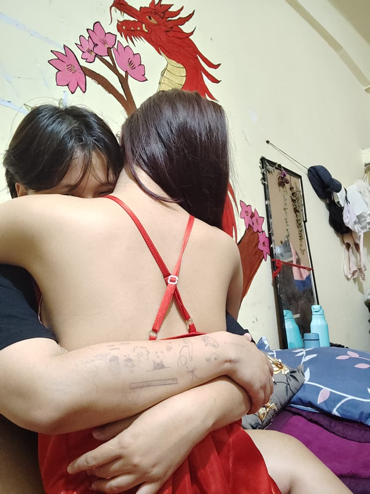
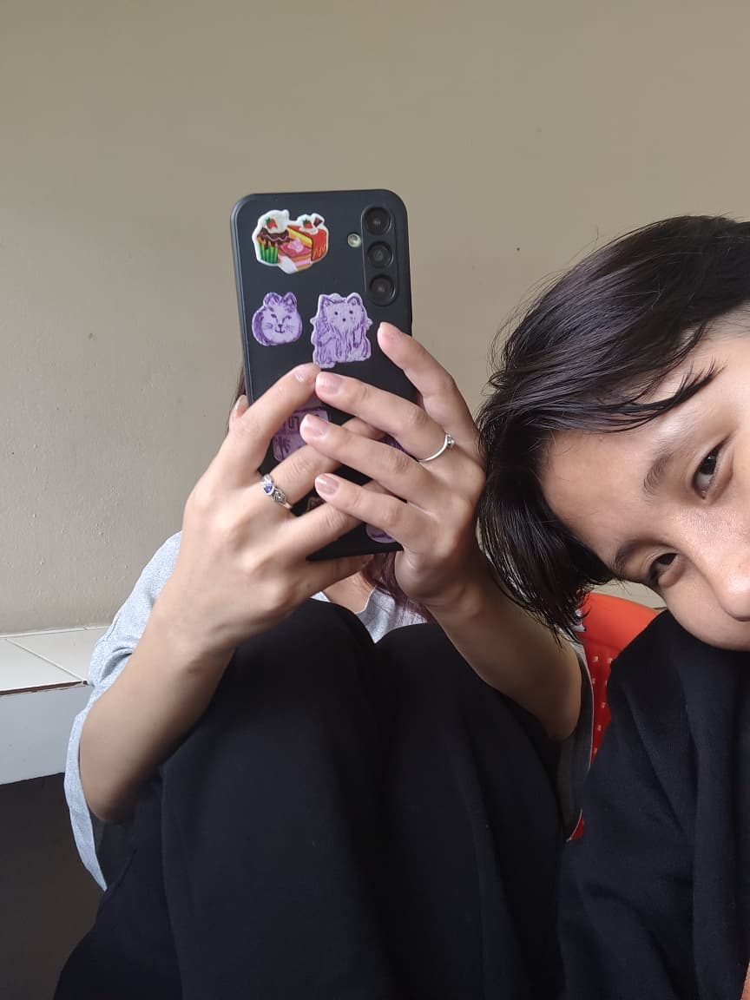
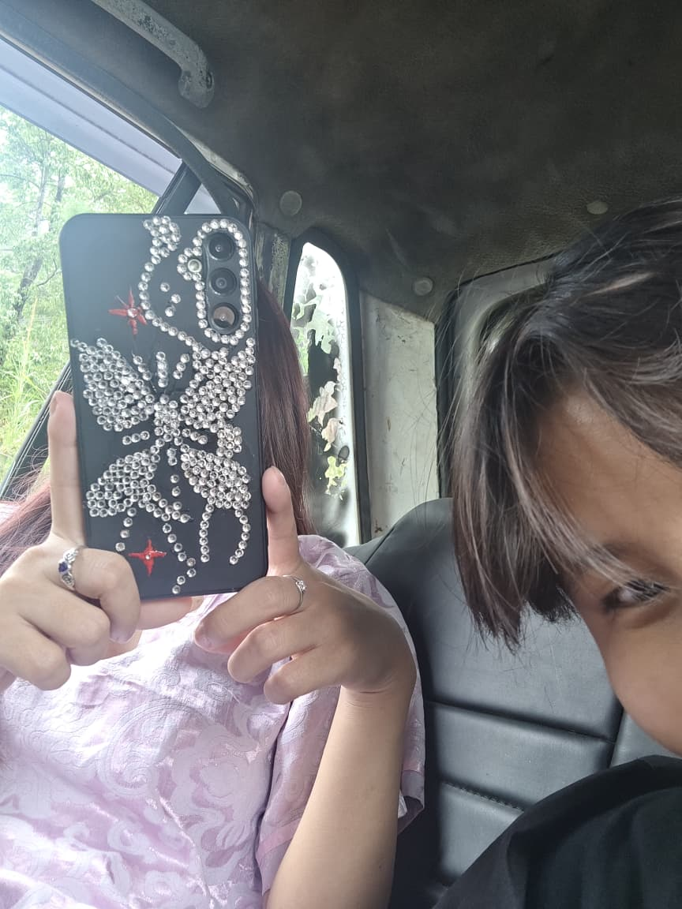
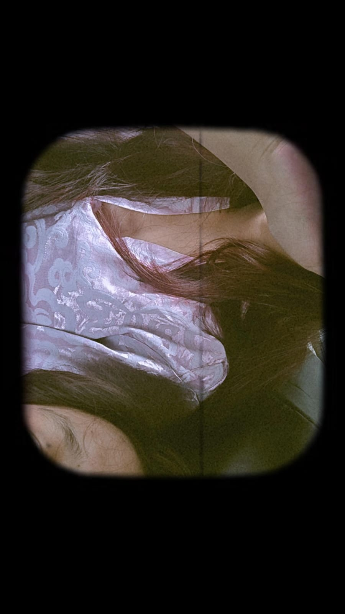
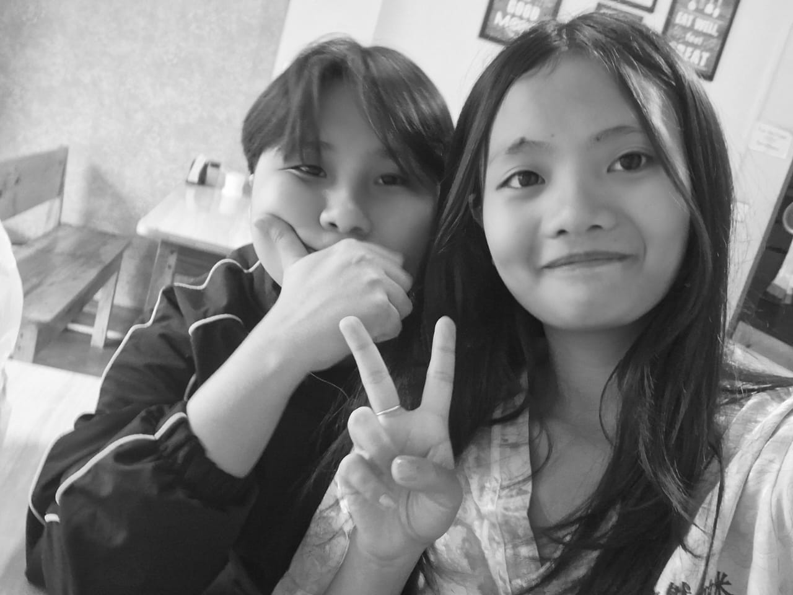
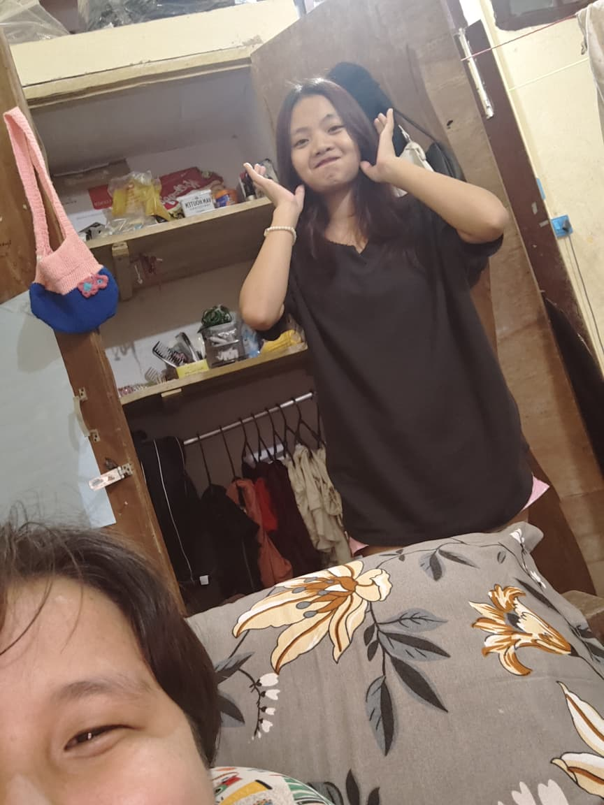
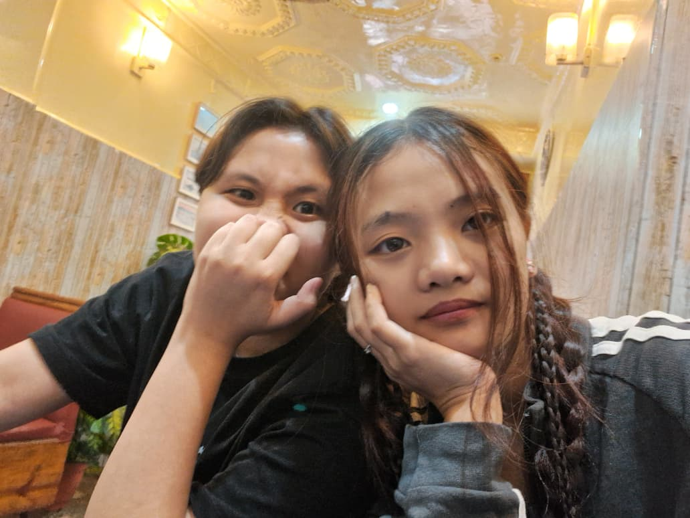
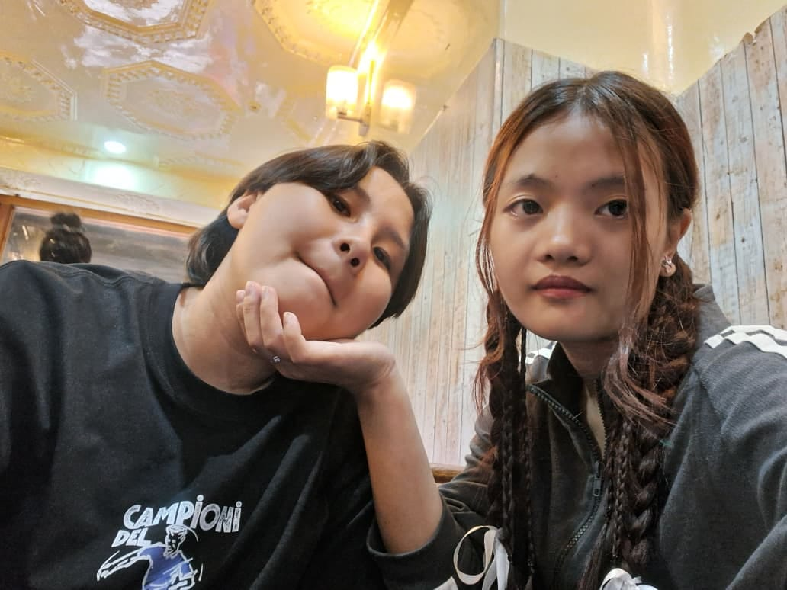
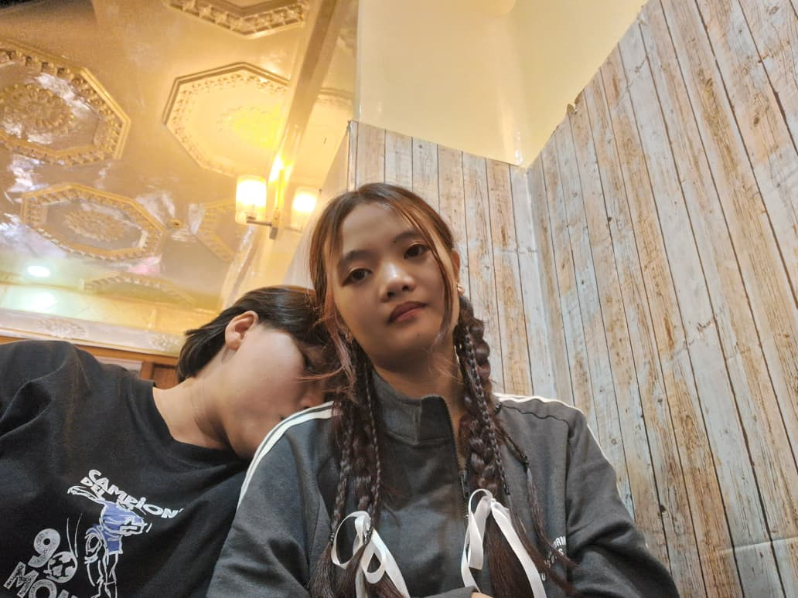
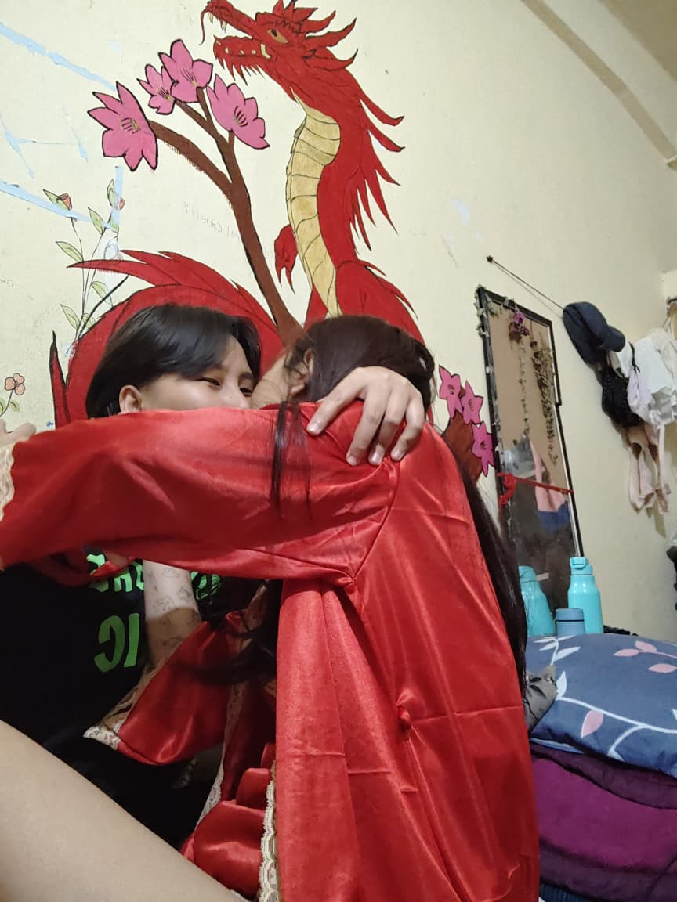

Our diary
For the one I love
Click the right page to turn
Anniversary diary
Our diary
Click the right page to turn
Page 1
It's been 2 months of us being together in this two months i have come to pyaar you more With each single day my love for you keep on increasing mra andar aapke liye bht bht bht pyaar hai Thank You for ane ke liye mra life mein and for making it alot better my existing in the same timeline as me kekeke When i saw you first time i never even though that in the future i would be dating you yeh sab ek dream jesa feel hta hai YK sometimes i still can't believe that aap mra hai krke.
Yk i want to stop hurting you I want to be a better person for you I want to give all my love aapko As you deserve all the love in this world hm aapko duniya ka saara khushi dena chata hai Cause I wanna see you happy nd smiling Aapko mlm nai hga hga but aapko laugh bht melodious hai Hmko kabhi nai laga tha ki that i would end up dating you cause hmko laga tha ki you would never accept me Mra bht dst log ne toh bola he tha give up krne ke liye haha hm he haar nai mana kuch zyada he stubborn tha hm But atleast in the end mra give up na krna kam toh aaya kuch toh faal mila hmko kekeke Yk yeh mra first time hai jo kisiko asa krke court krna kekeke Thank You for existing in the same timeline as me. I Love You soooooo sooooooooooooo much Baby. Happy 2nd monthasary kekekekeke I Love You
Photo 1

AAPKA HUGSSSSS FEELS LIKE HOMEE.
Page 2
Ussdin hm dno ne ek dusre ke haath mein drawing yeh sab banaya tha well mra drawing krb tha aapka comparison mein but i still tried mra best hahaha. Yk aapka hug bht magical hai as it feels like home hmko hug krna psnd nai hai but aapka hug is something else it just feels right nd feels like home.
Photo 2

I ENJOY OUR EVERY LIL HANGOUT IN CANTEENN.
Page 3
Hmko aapka saath canteen mein jana acha lgta hai hahahahaha nd i enjoy all those our hangouts in mobile canteen just aapke saath canteen mein bethke aapna khana enjoy krne mein he alag sa kushi hai mra liye kekeke.
Photo 3

FIRST DATE IN UMBIRRRSS.
Page 4
Yaad hai aapko aap aapka phone case ka design showoff kr rha tha uss din hm log first time ke liye umbir gya tha Date ke liye it was a sudden plan but maja toh aaya.
Photo 4

USSSSSSSSSSSS.
Page 5
Umbir jane wala ka he hai yeh bhi HAHAHAHAHAHA ussdin waki mra paisa gya hga bht but aapke saath time spend krke maja toh aaya tha even if it was just simple as just going to umbir to eat i enjoyed it really well.
Photo 5

KINNAAA SONII HAII MRA GIRLFRIENDD.
Page 6
Aap uss din bimr tha but still mra saath gya tha umbir. Aapko leke jane ka toh mn nai kiya cause aap bimr thaa but still leke jana pada cause aapka dil dukha na nhi chatha tha.
Photo 6

RANDOMM CLICKSSS.
Page 7
Everytime spent with you is just perfect nd bliss there isn't any dull moment with you it's either laughter or you mocking me or we fighting but regardless of all these I STILL LOVE YOU AS YOU ARE MY BABY BACHAAA.
Photo 7

OURRR FIRST DATE IN SHILLONGG.
Page 8
Hm log ka first date to Shillong HAHAHAHAHAHAHA which went terribly glt but it was still fun as i still got to enjoy my time aapke saath.
Photo 8

TIREDDD USSSSS.
Page 9
Motion sickness ka dawai khaya tha so that we won't feel shit while travelling but sala dawai itna powerful nikla that it lasted longer tha our visit to Shillong which completely overthrew our plan that we had made or had in mind.
Photo 9

WASTED BUT IT WAS FUNN.
Page 10
Even if the din hm log ka plan ka hisab se nai gya but still i enjoyed jo bhi hua tha but it was epic that we ended hm log ka date fighting with that driver lawl usske wajahse bimr takh hgya tha epic date it was THE MOST EPIC DATE I EVER WENT TO HAHAHAHAHA.
Photo 10

I LOVE AAPKA KISSESSS.
Page 11
Doesn't look like i forced aapko idr kiss krne ke liye it just looks like a mutual wala kiss HAHAHAHAHA SORRY BUT NOT SORRY I love stealing kisses from aapse kekekeke I LOVE YOU BABY ALWAYS ND FOREVER.
Page 12
Thank You for mra life mein coming hone ke liye yk yeh mra first time tha asa krke kuch experience krna Stalking yeh sab krna kisiko HAHAHAHAHAHA hm normally krta toh tha stalking yeh sab but kabhi asa crush wagera hoke nai kiya tha kekekekeke I really enjoyed aapko dekhna woh time mein when you didn't know me but mra right bagal se jab aap pass hua hm aapko piche murke dekhta tha Aapko dekhne ke liye kya kya he na kiya hga hm abhi soch ne se funny lgta hai Aapka ek sight ke liye canteen mein jab wait kiya tha paisa waisa spend krke didi ko rukh waya kyuki I didn't want to wait akela udr but aap aaya he nai tha uss din hm bahar mein direct 6:00pm takh raha hga Ek jhaga se alag jhaga bs aapka ek jhalak ke liye HAHAHAHAHAHA Aur aap chalo insan mess ka piche se aata hai sala But still hm aapko uss din dekha tha TR DAS ka middle floor se jab hm sab wapas chala gya tha Usdin aapko dekhne chakar mein hm kitna aadmi ko udr basketball mein rukaya bs aapko dekhne ke chakar mein HAHAHAHAHAHA Bht saara asa memories hai asa mra pass HAHAHAHAHAHAHAHA.
Last page
Thank You Baby mra life mein aane ke liye I don't want to lose you cause of my mf behaviors So I'll change all my bad habits for you as I want you not for few weeks, months or years I want YOU for the rest of my life Ik the ride to future won't be all happy there will be days when it won't be good And i don't want to leave you alone on those days I want to be with YOU in all the up nd downs of life I don't just want to be with you in the happy days i wanna be with you in days when it's hard I want to be there for you when you need me I want to be the hand you can hold nd trust on I want to protect you from all the evil of this world ik am not that strong but I want to be your shield that protects you And when the world feels heavy you can always run to me My arms are always open for you. I LOVE YOU VERYYYYY VERYYYY MUCHYYYY MY BABY MY EVERYTHING KEKEKEKEKE.
Forever, me